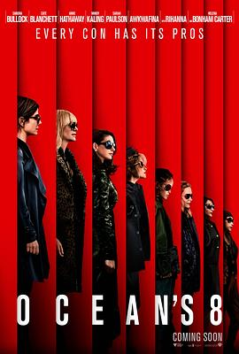

瞒天过海：美人计 / Ocean's Eight
又名：女版十一罗汉 / 瞒天过海：八面玲珑(台) / 盗海豪情：8美千娇(港) / 八罗汉 / 八大罗汉 / 侠盗英姿 / 盗海姐妹团 / Ocean’s Ocho / Ocean's 8
作品信息
| 导演 | 盖瑞·罗斯 |
| 编剧 | 盖瑞·罗斯 / 奥利维亚·米尔奇 / 乔治·克莱顿·约翰逊 / 杰克·戈登·拉塞尔 |
| 主演 | 桑德拉·布洛克 / 凯特·布兰切特 / 安妮·海瑟薇 / 海伦娜·伯翰·卡特 / 蕾哈娜 / 莎拉·保罗森 / 敏迪·卡灵 / 奥卡菲娜 / 詹姆斯·柯登 / 理查德·阿米蒂奇 / 格里芬·邓恩 / 迪德尔·古德温 / 丹尼埃拉·拉贝尼 / 埃利奥特·古尔德 / 夏洛特·柯克 / 达科塔·范宁 / 理查德·罗比查乌克斯 / 达米安·杨 / 戈登·格里克 / 凯特琳·梅纳 / 詹姆斯·比贝里 / 香农·弗雷尔 / 康纳尔·多诺万 / 凯文·布朗 / 马尔洛·托马斯 / 丹娜·爱薇 / 玛丽·路易丝·威尔逊 / 伊丽莎白·阿什利 / 凯蒂·霍尔姆斯 / 肯多尔·詹娜 / 凯莉·詹娜 / 金·卡戴珊 |
| 类型 | 喜剧 / 犯罪 |
| 制片国家/地区 | 美国 |
| 语言 | 英语 / 印地语 / 法语 / 德语 / 汉语普通话 |
| 上映日期 | 2018-06-08(美国) |
| 片长 | 110分钟 |
| IMDb | tt5164214 |
最后一次看到是 2026-08-12T21:12:08+08:00 · 豆瓣原页